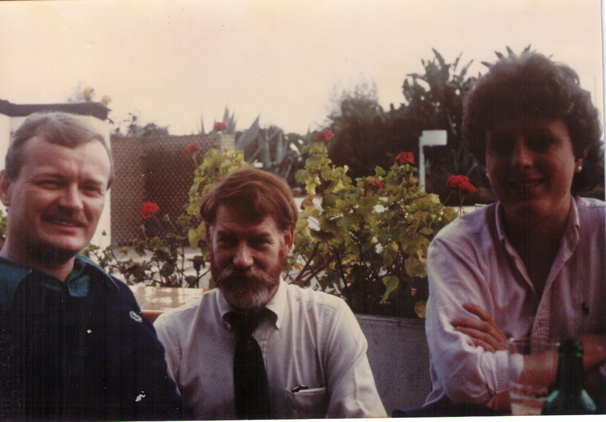
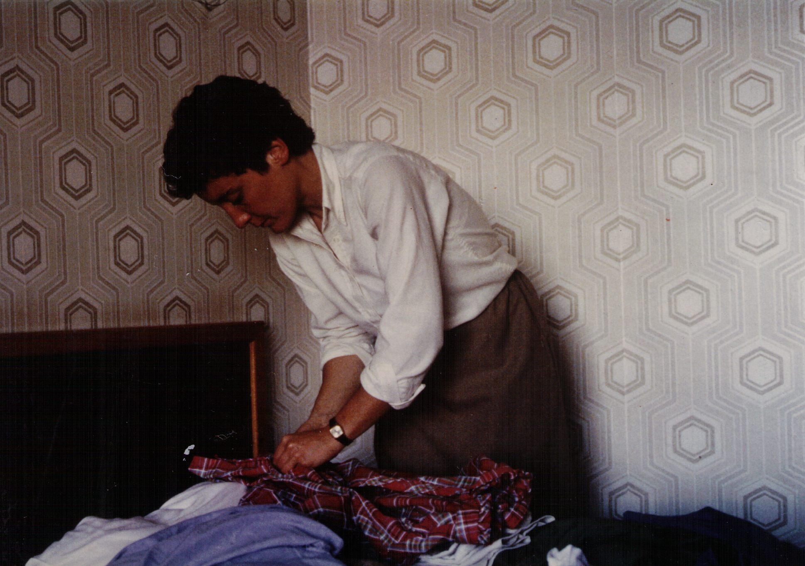
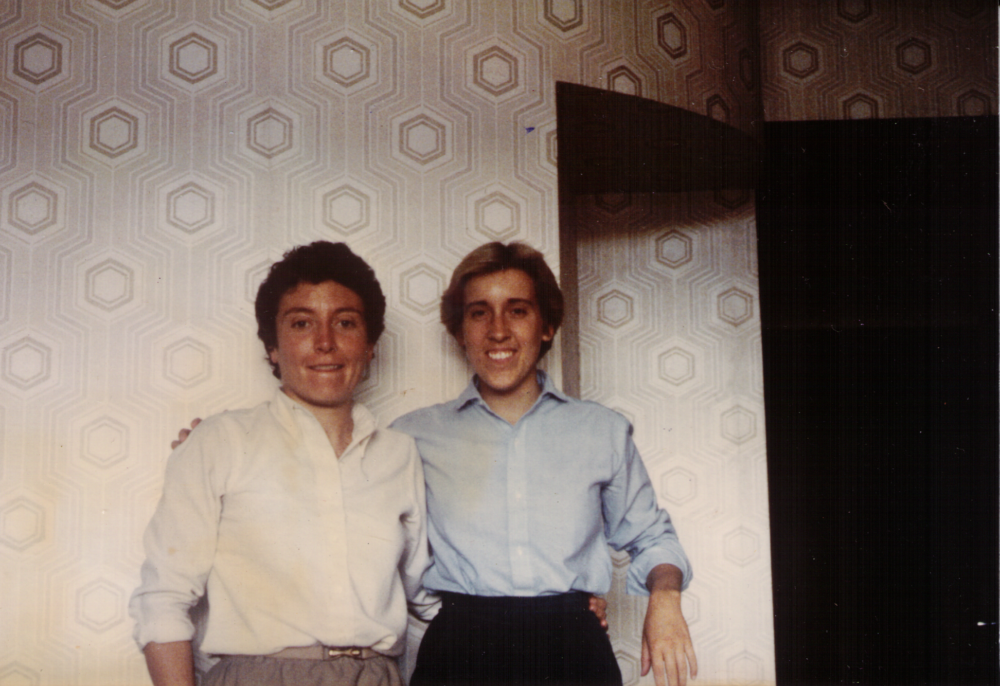
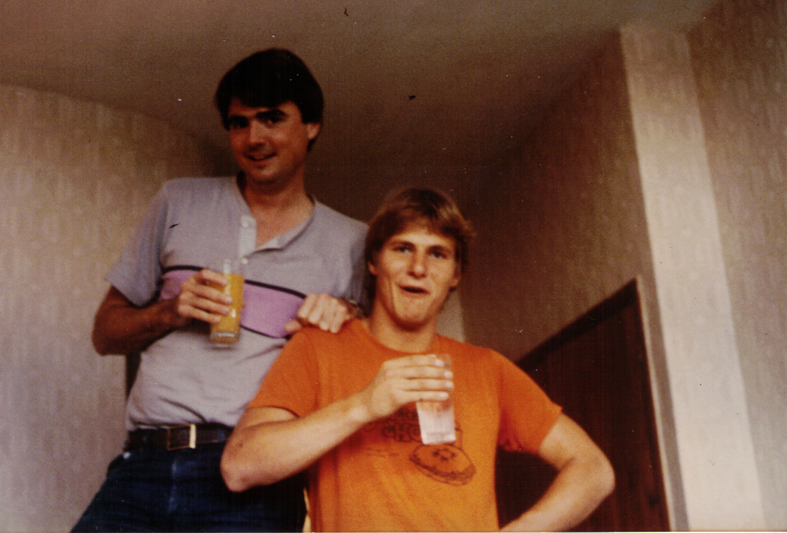
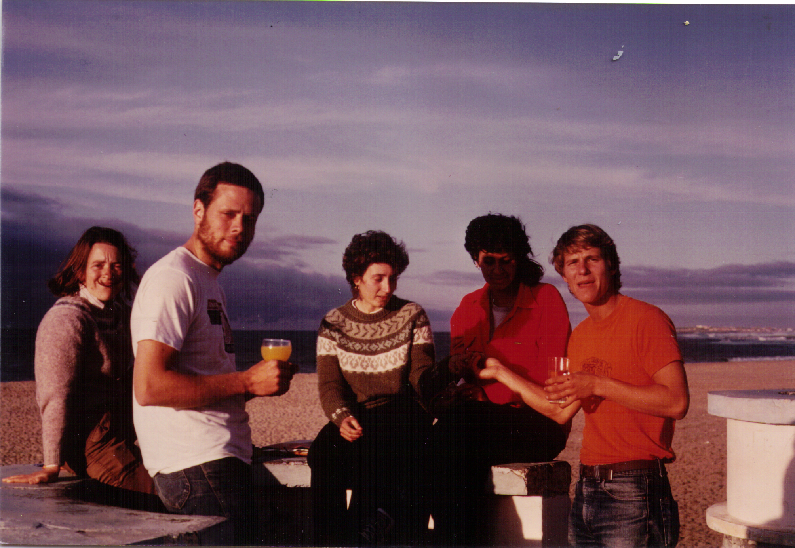
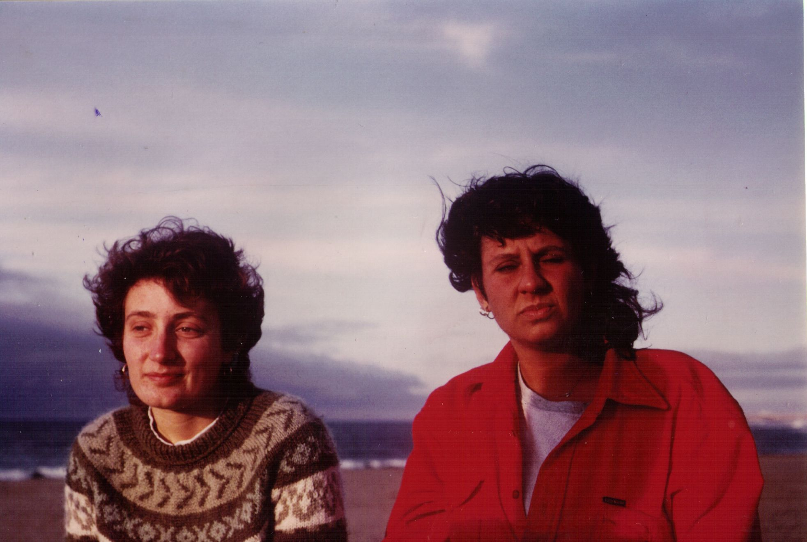
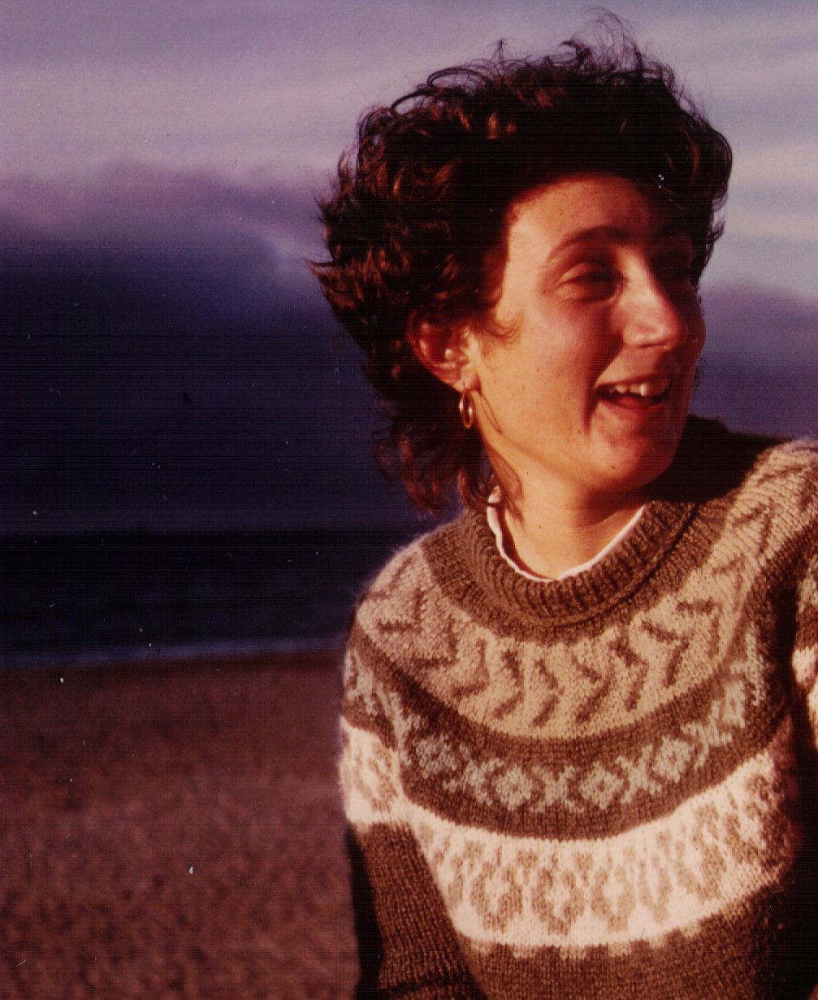

The All-Vol Conference
In April or so, 1985, Peace Corps/Morocco held an all-volunteer conference at the Five-Star Samir Hotel in Mohammedia. Or at least I think it was Five-Star—it certainly felt so to me. Though I do remember a certain red-head (you know who you are) pouting with a little moue when she had to use her salad fork for the main course.

BarryOConnor DavidBurgess and ChrisVeretto

PegGiffels

PegGiffels and GretchenSchirmer

TimHonkamp and RickWatts

JanineAnderson, DaveStoelting, HeatherGraham, LisaLasky and TimHonkamp

DaveStoelting and JanineAnderson

HeatherGraham and LisaLasky

HeatherGraham